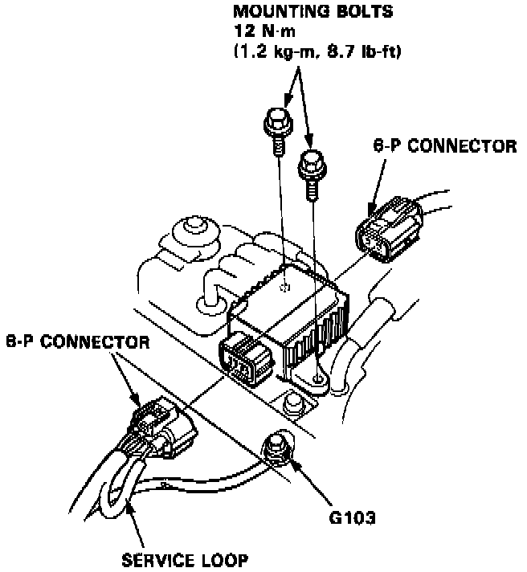

Ignition Control Module: Service and Repair
PROCEDURECAUTION: Be careful not to damage the vacuum hoses when removing the ignition control module.
1. Disconnect the 8-P and 6-P connectors from the ignition control module.

2. Remove the two mounting bolts and slide the ignition control module out toward the front side.